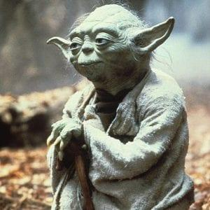
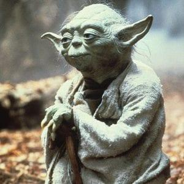

The Star Wars prequel trilogy, colloquially referred to as the prequels, is a series of epic space-opera films written and directed by George Lucas. It was produced by Lucasfilm Ltd. and distributed by 20th Century Fox. The trilogy was released from 1999 to 2005 and is set before the original Star Wars trilogy (1977–83), making it the first act of the Skywalker saga, despite being the second released. Lucas had planned a prequel trilogy (as well as a sequel trilogy) before the release of the original film, but halted major Star Wars films beyond the original trilogy by 1981. When computer-generated imagery (CGI) had advanced to the level he wanted for the visual effects he wanted for subsequent films, Lucas revived plans for the prequels by the early 1990s. The trilogy marked Lucas's return to directing after a 22-year hiatus following the original Star Wars in 1977
The trilogy consists of Episode I – The Phantom Menace (1999), Episode II – Attack of the Clones (2002), and Episode III – Revenge of the Sith (2005). The films follow the training of the powerful youth Anakin Skywalker (the father of the original trilogy protagonists Luke Skywalker and Leia Organa) as a Jedi under the tutelage of Jedi Masters Obi-Wan Kenobi and Yoda, his fall to the dark side of the Force and birth as Darth Vader. The trilogy also depicts the corruption of the Galactic Republic, the annihilation of the Jedi Order, and the rise of the Empire under the secret Sith Lord and future Galactic Emperor Palpatine. The first two films received mixed reviews, while the third's reception was positive.
Having been significantly anticipated by fans, Star Wars: Episode I – The Phantom Menace was released on May 19, 1999. It sees the Jedi coming into contact with the young Anakin Skywalker and the corruption of the Galactic Senate by Palpatine (Darth Sidious). Episode II – Attack of the Clones was released on May 16, 2002. The story jumps ahead 10 years and finds Anakin—now a Jedi apprentice of Obi-Wan Kenobi—pursuing a forbidden romance, as well as the outbreak of the Clone Wars. Episode III – Revenge of the Sith, the first PG-13 film in the franchise, was released on May 19, 2005.[10] It depicts Anakin's fall to the dark side of the Force and his rebirth as Darth Vader.[11]
 
